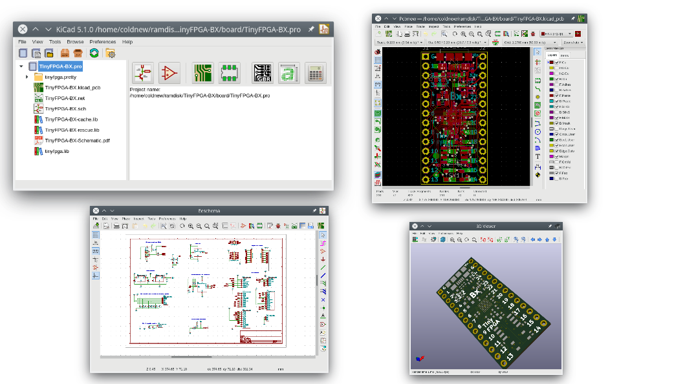
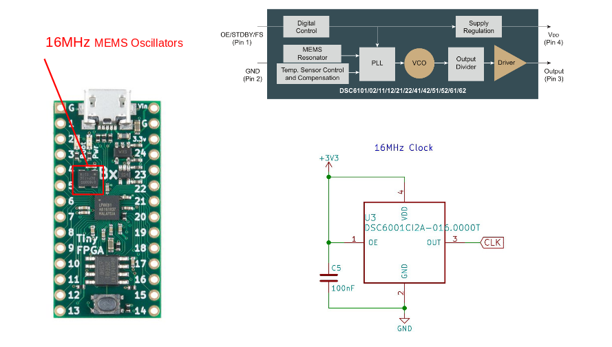
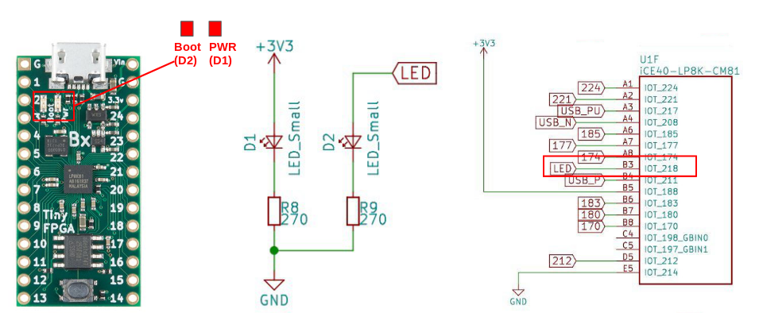
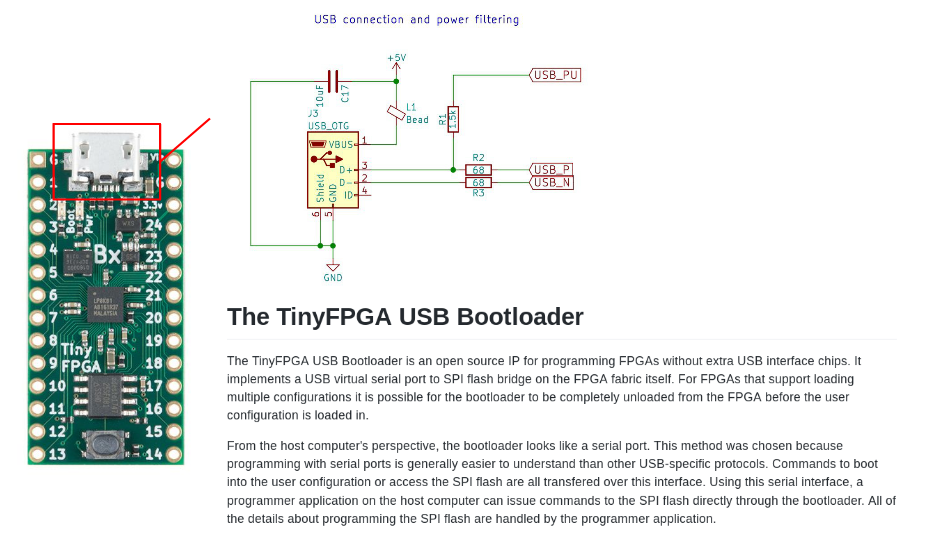
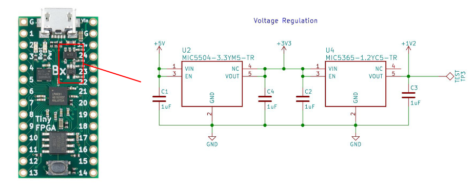
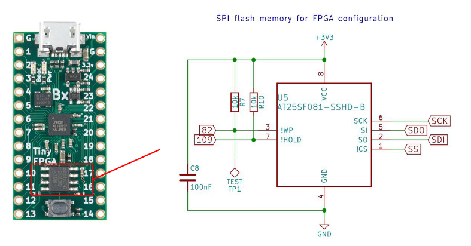
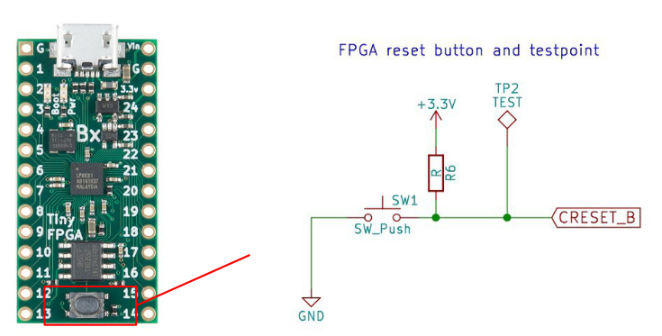
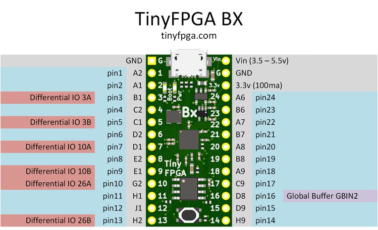
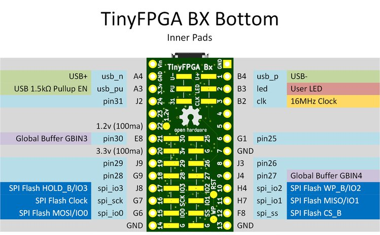

在 TinyFPGA BX 開發紀錄: 開箱文 一文中我開箱了最近買的 TinyFPGA BX 這款迷你的 FPGA 開發板，在這篇文章中將來講講他的硬體的一些資訊，好讓我們對這塊板子有初步的認識。
下載電路圖
TinyFPGA BX 的電路圖和範例程式接在 GitHub 上，你可以這樣直接下載下來
git clone https://github.com/tinyfpga/TinyFPGA-BX.git
其中，電路圖位於 board 資料夾下，你可以直接打開 TinyFPGA-BX-Schematic.pdf 或是透過 KiCAD 這款開源的 PCB 設計軟體來查看這塊開發板的設計

Lattice ICE40LP8K
MEMS 震盪器
TinyFPGA BX 採用了 16MHz 的 MEMS Oscillators (MEMS 震盪器)，其型號為 DSC6001CI2A-016.0000T

LEDs
板子上有兩個 LED，其中一個是電源顯示用的 LED (D1) ，另外一個則是和大多數 FPGA 開發板一樣，會提供給使用者可以自行控制用的 LED (D2)

MicroUSB
TinyFPGA BX 是透過 MicroUSB 和電腦端的燒錄程式溝通的，和其他的 FPGA 開發板都需要透過別的晶片來幫忙進行燒路的狀況不同，TinyFPGA BX 使用了特殊的 Bootloader 來實現虛擬的 USB 通訊，讓電腦端的程式可以將要燒錄的資訊寫入到板端的 Flash 上。

穩壓電路
在穩壓電路的部份，則是透過 MIC5504-3.3YM5-TR 搭配 MIC5365-1.2YC5-TR 來將 USB 端提供的 5V 電壓轉化成 3.3V 以及 1.2V 位準的電壓。

SPI Flash
TinyFPGA BX 搭載的 Flash 為 AT25SF081-SSHD-B ，此一 Flash 透過 SPI 協定進行溝通，具有 8Mbit 的空間可以提供使用者存放資料 (有一部份空間會被 TinyFPGA-Bootloader 吃掉)

Reset Button
當你的板子運作不良或是希望重新啟動的話，這時候就可以敲敲 Reset 按鈕了~

Reference Card
除了上面的基本硬體認識外，隨著 TinyFPGA BX 過來的還有一張 Reference Card, 可以讓我們快速查找每一隻腳的用途
TinyFPGA BX Top

TinyFPGA BX Bottom
